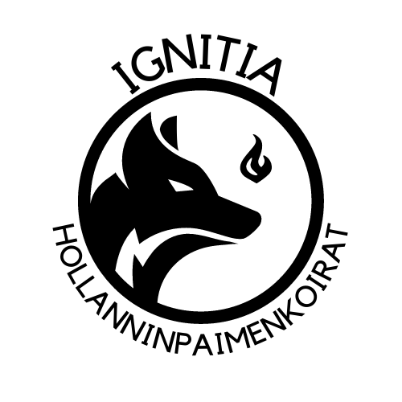

"A loyal and trustworthy, observant and active, independent and persistent, intelligent, obedient and a true shpherd by nature."
- Dutch Shepherd breed standard, FCI.
Welcome to my home page. I breed shorthaired Dutch shepherds mainly for work and sport. You can find information about my dogs, litters and thoughts about Dutch shepherd breeding. You can find the latest news about me from the blog section.
Enjoy my web pages! - Anni Roiha
Yhteystiedot
holskut [at] gmail.com